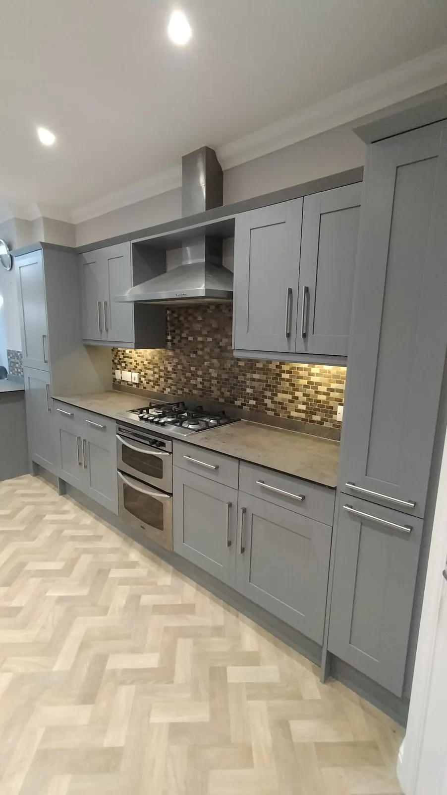
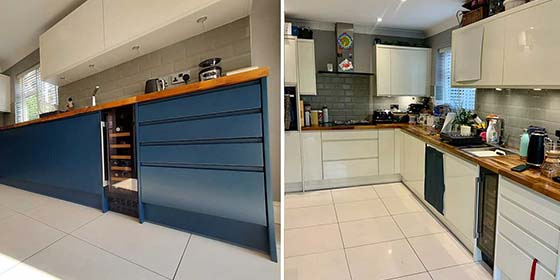
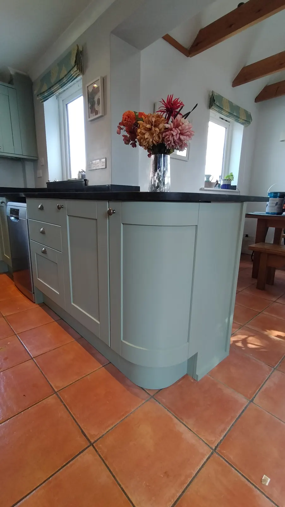
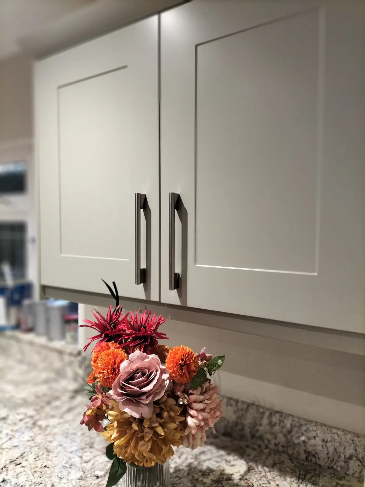
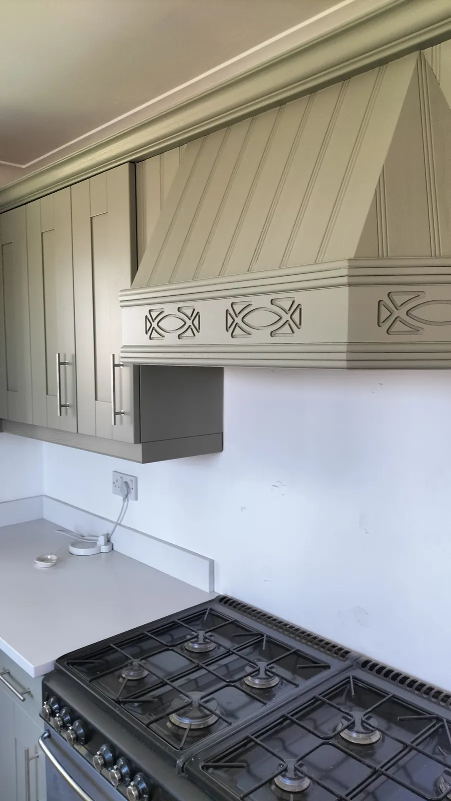
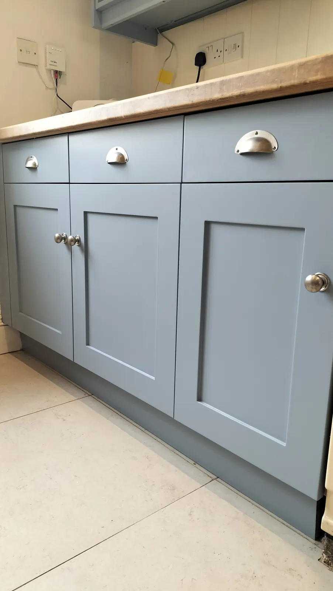

Honest answers to the questions Hampshire homeowners ask us most — what a respray costs, how long it takes, which kitchens can be sprayed, and the colours people are choosing.

Specialist kitchen resprayers in Hampshire. Doors sprayed off-site by trained staff, complete in 5 days with only 2 afternoons of disruption.
Read the guide →
What a kitchen respray costs in Hampshire in 2026, what’s included, what affects the price and how it compares with a new kitchen — from a local Dulux Accredited sprayer.
Read the guide →
An honest comparison of respraying your kitchen against replacing it, fitting new doors or vinyl wrapping — cost, disruption, finish and how long each lasts.
Read the guide →
Before and after photos of 12 real kitchen resprays across Hampshire — gloss, oak, pine and painted kitchens transformed in about 5 days.
Read the guide →
Can a Howdens, Magnet, IKEA, Wren or B&Q kitchen be resprayed? It depends on the door surface, not the brand. How to tell what you have — from a Hampshire sprayer.
Read the guide →
A kitchen respray with us takes about 5 days, with only 2 afternoons of disruption at home, and you can use your kitchen the same day. Here’s how the week works.
Read the guide →
The real kitchen paint colours we’ve sprayed across Hampshire — greens, blues, greys and pinks from Farrow & Ball, Little Greene and Dulux — plus tips for choosing yours.
Read the guide →
Why vinyl-wrapped kitchen doors peel near ovens and kettles, and your honest options — re-glue, replace or respray. Advice from a Hampshire kitchen sprayer.
Read the guide →
Why DIY-painted kitchen cabinets chip, peel and stay tacky — and how a professional respray puts a failed paint job right. Advice from a Hampshire kitchen sprayer.
Read the guide →
The difference between spraying kitchen doors in a workshop and spraying everything in your kitchen — and why we combine both. From a Hampshire kitchen sprayer.
Read the guide →We’re a local, family-run team based near Botley, so we only take on kitchens in Hampshire and just over its borders — Winchester, Southampton, Eastleigh, Chandler’s Ford, Hedge End, Romsey, Andover, Basingstoke, Alton, Petersfield, Fareham, Waterlooville and the villages in between.
If you’re further afield, we’re sorry we can’t help — but everything in this guide still applies when you choose a local specialist near you.